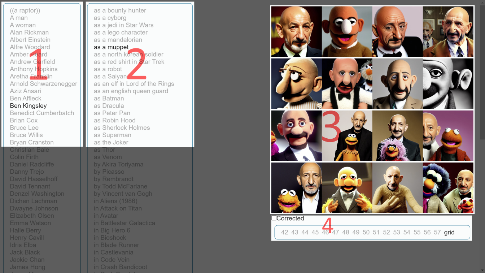
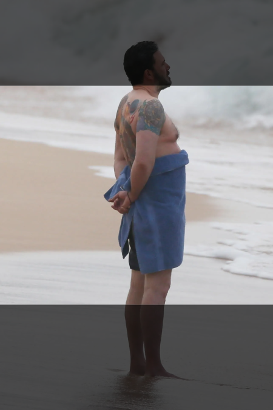

The contents of this repository and study have been generated using the Stable Diffusion 1.4 model. Strictly no editing took place, and as a result, no copyright is being held since the source data was entirely machine generated, without human intervention. As such the contents should fall under the fair use doctrine.
Furthermore, the viewer is advised that some contents might be a bit shocking due to the current state of the art of deep learning image generation. A lot of the results will feature extra limbs, missing limbs, noodle fingers, extra eyes, extra mouths, and other such strange features.
Also, very ironically, both this current text, and the source code of the viewer, have been written with the extensive help of GitHub Copilot.
The proliferation of text-to-image deep learning models have accelerated the growth of so-called "AI art". The leak of Stable Diffusion's models, although controversial, has brought public attention to the topic of AI art.
A variety of software has started cropping up, allowing virtually anybody to run Stable Diffusion's models on their own computer. While playing with one of these, it appeared some patterns were emerging.
This study aims to explore these patterns, and to provide a better understanding of the current state of the art of text-to-image
Using natural language-style queries led to many prompts in the form of "Brad Pitt as Willy Wonka", "Jennifer Aniston in The Shining", or "Kim Kardashian by Salvador Dali". From this, a matrix of prompts is the next logical conclusion.
The matrix is formed by taking 70 "names" and 70 "situations", and creating the 4900 prompts from the full cross product. Each prompt comprises 16 images, using the same 16 seeds (seeds 42 to 57), and the 1.4 model. The rest of the settings are: Classifier-Free Guidance of 7, 50 steps, using the k-euler a sampler. Each generated image is also run through the GFPGAN face restoration model, and the before and after pictures are saved.
Rendering took just under 3 days, using a single RTX3090 GPU. The generated PNGs are around 57GB in size, so to save space and bandwidth, were compressed to JPEG at 85% quality. The final compressed size is 5.7GB.
Note: many duplicate entires were generated, all of them from cases where the face restoration model hasn't been successful.
A viewer is available to browse the results of the study. The viewer is a simple web application running completely within the browser.
The viewer is divided into four zones:

Zone 1 is the list of names.
Zone 2 is the list of situations.
Note: you may click/tap and drag to quickly flick through either list of entries.
Zone 3 is the images. When in grid mode, clicking an image will select this one seed. When in single image mode, clicking an image will go back to the full grid of 16. Holding CTRL when clicking will toggle the face restoration mode.
Zone 4 is mostly there for status, but is also interactive. Dragging through the list of numbers will quickly flicker through the seeds.
Images are loaded lazily (as and when required), as there are hundreds of thousands of them. As the browser caches them for subsequent viewing, repeat loads should be instantaneous. The bottom of the screen will display the number of images that have been loaded, and the total number of images which may be loaded. Note that the total size of the images is 5.7GB, so be mindful of memory usage.
Last but not least, the viewer generates "permalink" html anchors when interacting with it, so links to the current view may be shared with others.
Typically, such a paragraph might be named "Results" or "Conclusions", but as a neophyte, trying to offer any sort of analysis or explanations runs the risk of falling prey to the pathetic fallacy, or worse, the Dunning-Kruger effect. Some hypothesis might still be offered however, without actual means of verification.
The aim of these observations isn't necessarily to point out what the model can and cannot do. These are usually well known already, and are easily observed, even within this study. Here, we will try to rather focus on the cross examination of various prompts across multiple names and subjects. The "click & drag" flicker feature of the viewer helps with this sort of cross examination.
The first obvious property is that celebrity names have different internal "weight". When combined with a situation, some names will converge less than other towards a mix between the name and the situation, and instead will just produce pictures of the celebrity. For instance, most pictures generated using the name "Aretha Franklin" or "Albert Einstein" will never mix properly with situations such as "as a robot": Aretha Franklin as a robot. But using Christian Bale as a robot can produce a good mix.
Additionally, some generated celebrity images are very sharp and precise, while others are much less recognizable or more uncanny. For example, Daniel Radcliffe has an odd jawline, Sigourney Weaver often comes out with strange, googly eyes, and Nick Offerman often looks a bit plastic.
One potential hypothesis is that the model is learning to recognize faces, and so the more recognizable the face is, (e.g. a large sample set with low variations), the more accurate the model will be at generating this specific celebrity face. This would explain why some celebrities are more recognizable than others, and why some celebrities are more precise than others.
For example, there are many pictures and memes of Albert Einstein online, but sourced from a relatively small group of unique photos, whereas pictures of Daniel Radcliffe span 2 decades of his life from childhood to adulthood, covering many roles and appearances. Nick Offerman often appears with a large white beard, or only a moustache from his role on Parks and Recreations. Sigourney weaver has been featured online side by side with her avatar from the eponymous movie by James Cameron, and so a large proportion of her generated images feature the eyes of the blue-skinned aliens, and similar overall skull proportions. Celebrities who have undergone radical body shape changes, such as gaining or losing a lot of weight, will often be depicted in very grotesque or humiliating manners. Some names have been removed from this study as a result of this.
Some celebrities skew heavily towards their most iconic roles, filling the results with renders akin to those roles. For instance, "Tim Curry" will often produce results somewhere between his role as Pennywise the clown in It, and his role as Frank-N-Furter in The Rocky Horror Picture Show. "Tom Holland" will often produce results that resemble Spider-Man, even in situations where he is not supposed to be a superhero. "Henry Cavill" will often produce results resembling Superman, and "Bruce Lee" will often be featured in a fighting stance. It is hoped that, using negative prompts, one ought to be able to remove the influence of these iconic roles, and produce something that looks more like the celebrity themselves. This, however, means that the user needs to be able to recognize the influence of that role to negate it -- which is not always easy.
Another interesting aspect is that the same seed has a tendency to produce the same pose across completely different prompts. For example, on seed 44, Bruce Lee as a Bounty Hunter, Bruce Lee as a Cyborg, Bruce Lee as a Mandalorian, Bruce Lee in Big Hero 6, Bruce Lee in Castlevania, Bruce Lee in Ghost in the Shell, or even Bruce Lee in Minecraft, all produce the same pose, with his leg kicking. Sometimes even across martial artists: Jackie Chan as Superman. Other similarities can be distinguished across different seeds, names, and situations, but the leg kick is a very obvious one. Quickly flicking through images using the drag feature can help in finding these similarities. This suggests that some seeds could be cherry-picked to achieve desired poses for completely different prompts.
One bizarre observation is that the model will sometimes generate two individuals, separated by a white line for a single prompt. Particular seeds tend to produce this behaviour more often than others. For example, seed 55 does this on the fully empty prompt. Flicking through different combinations for this seed will yield other such renderings: vs Predator, Zandaya vs Predator, Tom Holland in Dark Crystal, Tilda Swinton as a muppet, etc. More rarely, it will generate something that looks like 3 pictures side by side. One hypothesis is that the model has been trained on a poorly curated list of images, such as tabloids with hyperbolic, clickbait titles: "The 10 most bizarre celebrity lookalikes", or "Tilda Swinton admits playing old man in Suspiria film hoax". The model, having learned to recognize these images as a whole, is simply trying to reproduce them. Note that in the last link, the picture contained in the page features exactly this sort of side-by-side picture with a solid white line down the middle.
Still on the quality of the training set, it is very obvious that it included trashy meme pictures with poor labeling, which should have been excluded from the start. This results in a lot of the prompts needing to be very detailed, (for both the positive and negative inputs), to filter out the influence of such images in the final renders.
Finally, in light of those potential deficiencies in the training set, another hypothesis is formed about why many of the generated
images feature humans cropped below the neck or even further. If the model required training on 512x512px images, with sloppy processing and selection, then it is
reasonable to imagine that vertically-orientated "portrait" images were automatically cropped, haphazardly cutting off the top.
For example an automatic crop of Ben Affleck's iconic beach picture might result in such data being fed to the model.

This is an informal study, undertaken mostly because some results are really, really funny.
Some images are very wholesome, some weird, but most are just boring.
The author is a software engineer, but not a machine learning scientist, and so the results and conclusions outlined should not be taken too seriously.
Now that the machine learning image generation genie is out of the bottle, we must make peace with the fact that it is trivial for someone to download the model and generate images of any situation they want -- however grotesque or crass. One way to fight this may be to ensure that the training set is properly curated, but given how the model is already widely available, it may be too late.
From the uncanny appearance of the generated images, it is clear that most of the images are AI renders.
A few though are very convincing without much extra effort.
By fine tuning the model using tools like DreamBooth or textual inversion, by refining the prompts, and by
post processing the images, it is possible to generate images that look like they were taken by a professional photographer with
less effort than it would take to create them by traditional means.
The idea that the model may have been trained on poorly curated data does suggest that more overall effort is required,
but the bar to entry is still very low, and generating convincing results is fairly trivial.
All in all, tools like Stable Diffusion are just that: tools. Used wisely, they can accelerate the work of a professional artist seeking to generate certain categories of imagery. Used poorly, they can be used to generate images that are not only not useful, but also harmful. It is up to the user to decide how to use them.